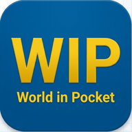

Materiali per la stampa
Press kit
WIP è un'audioguida che parte da sola. Cammini o guidi, passi davanti a un luogo e il telefono, in tasca, te lo racconta: anche a schermo spento, senza cercare nulla né premere play. Oltre 9 milioni di luoghi in 196 paesi, in 7 lingue. Per iPhone, su App Store dal 25 settembre 2026; si usa anche dal browser.
WIP is an audio guide that starts by itself. Walk or drive past a place and the phone in your pocket tells you its story: even with the screen off, with nothing to search for and no play button. Over 9 million places in 196 countries, in 7 languages. For iPhone, on the App Store since 25 September 2026; it also runs in the browser.
Le audioguide che esistono sono tour: qualcuno ha registrato un percorso e tu lo segui, con il telefono in mano e lo schermo acceso. Nei venti minuti a piedi tra il Colosseo e il Pantheon, tra il Louvre e Notre-Dame, tra Senso-ji e lo Skytree, non parla nessuno.
WIP fa il contrario: non c'è un percorso da seguire. Si cammina, o si guida, dove si vuole; quando ci si avvicina a un luogo di cui l'app ha qualcosa da dire, l'audioguida parte da sola.
Existing audio guides are tours: someone recorded a route and you follow it, phone in hand, screen on. In the twenty minutes on foot between the Colosseum and the Pantheon, between the Louvre and Notre-Dame, between Senso-ji and the Skytree, nobody speaks.
WIP works the other way round: there is no route to follow. You walk, or drive, wherever you like; when you get close to a place the app has something to say about, the audio guide starts on its own.
Parla al momento giusto, non in linea d'aria. La distanza che decide quando parlare è misurata lungo le strade fino all'ingresso del luogo. In una città vera si può essere a quaranta metri da una chiesa e dalla parte sbagliata del fiume.
Dice solo ciò per cui ha una fonte. Dove non c'è, sta zitta. I luoghi famosi hanno molto da raccontare; alcuni luoghi minori hanno una riga, o niente ancora.
It speaks at the right moment, not as the crow flies. The distance that decides when to speak is measured along the streets to the place's entrance. In a real city you can be forty metres from a church and on the wrong side of the river.
It only says what it has a source for. Where there is none, it stays silent. Famous places have a lot to tell; some minor places have one line, or nothing yet.
iPhone, 1080×1920. Clic per l'originale in alta risoluzione. Uso libero per articoli su WIP.
iPhone, 1080×1920. Click for the full-size original. Free to use in articles about WIP.
Su App Store e, senza installare nulla, dal browser. Gratuita con acquisti in-app. Per chi scrive sono disponibili codici promozionali: basta chiederli.
On the App Store and, without installing anything, in the browser. Free with in-app purchases. Promo codes are available for journalists and reviewers: just ask.
Presentazione in sette lingue: Overview in seven languages: wip.guide/scopri
WIP è sviluppata da una sola persona, in Italia. Per domande, codici promozionali, interviste o materiali in altri formati:
WIP is built by one person, in Italy. For questions, promo codes, interviews or materials in other formats:
«Volevo un'audioguida di cui dimenticarmi finché non ha qualcosa da dire.» — lo sviluppatore
"I wanted an audio guide I could forget about until it had something to say." — the developer